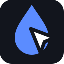

Thanks for installing Inkspect!
You’re all set — three steps and you’re marking up your first page:
Try it out
inkspect.example
P
Extensions
Full access
These extensions can see and change data on this site.
AdBlocker
Password manager
Inkspect — Website Feed…
Translator
Manage extensions
button too small
1
- 1Open the puzzle menu
- 2Pin Inkspect to the toolbar
- 3Click the icon — and start marking